O jeito Aura de vender material de construção: metro, metro quadrado, saco e milheiro no Caixa de sempre — mais orçamento que vira pedido, entrega parcial, NF-e da entrega, clube do profissional e compras por fornecedor. Tudo desligado por padrão; liga quem precisa.
Ligar em 1 toqueVenda por m² e kgCalculadora de ambienteOrçamento → pedidoEntrega parcialNF-e da entregaClube do profissionalCompras por fornecedor
Passo 1Ligar o Matcon
Onde: Configurações → card PDV e Caixa → chave Materiais de construção
Abra Configurações no rodapé do menu.
Role até Materiais de construção e ligue a chave.
Pronto: aparece a seção Matcon no menu (Orçamentos, Entregas, Profissionais, Compras) e o Caixa passa a aceitar quantidade decimal.
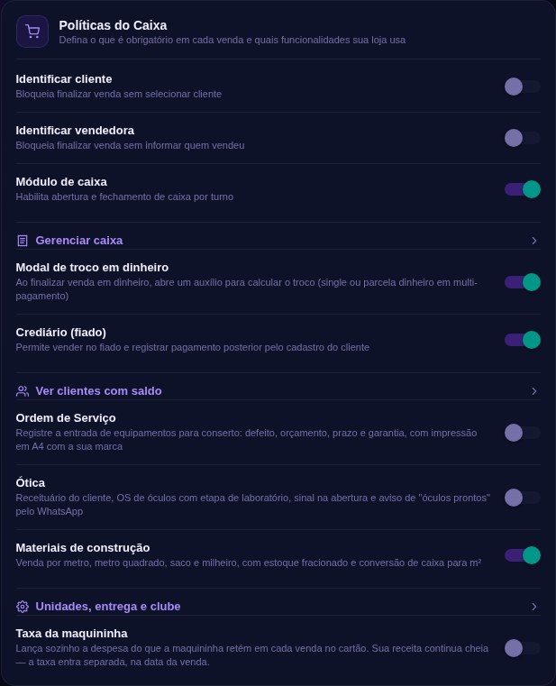
A chave fica ao lado de Ordem de Serviço e Ótica. Desligada, nada do Matcon aparece para a loja.
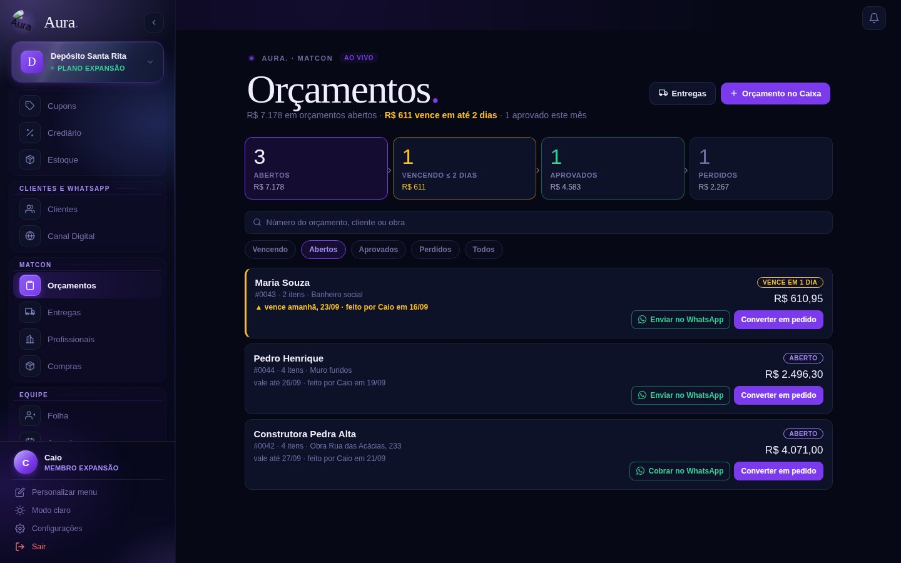
Com a chave ligada, a seção Matcon entra no menu, entre Clientes e Equipe.
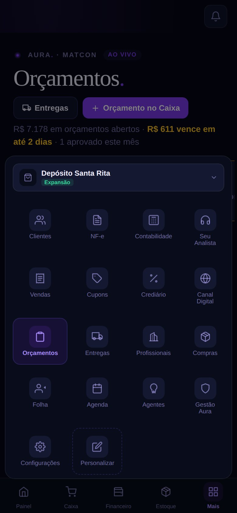
No celular, a seção fica em Mais, na barra de baixo.
Dica. A chave não muda nada para quem vende roupa, ração ou remédio: o Caixa, o Estoque e os relatórios continuam iguais. Só a loja de material vê os campos novos.
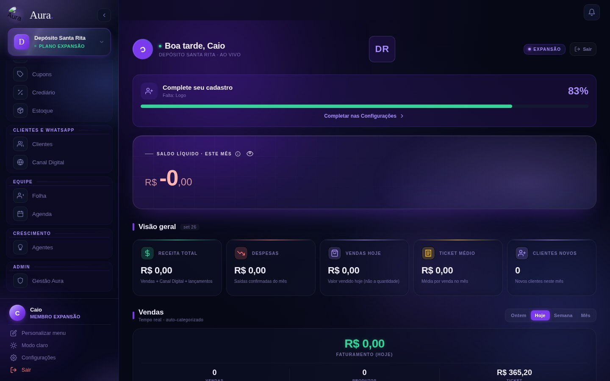
Chave desligada: o menu volta ao de sempre, sem a seção Matcon.
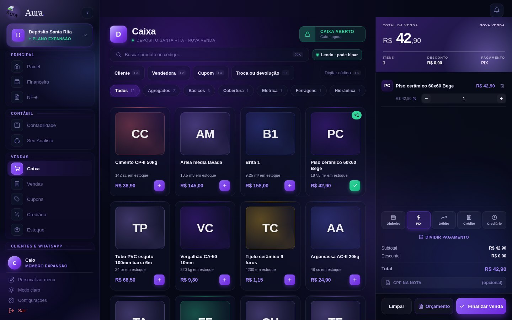
E o Caixa volta ao stepper inteiro — o mesmo piso, sem campo decimal nem calculadora.
Passo 2Ajustar em dois minutos
Onde: Configurações → link Unidades, entrega e clube (ou menu Matcon → engrenagem)
Cinco frases, sem jargão. Cada uma tem um valor padrão que já funciona; mexa só no que for diferente na sua loja.
Frase
O que muda
Minha loja vende em m, m², m³, sc, br, ton, mlh, pç…
Quais unidades aparecem no cadastro de produto.
Em piso e revestimento, considero 10% de perda
Perda por quebra e recorte que a calculadora de ambiente já soma.
Quando o cliente pede menos que uma embalagem fechada, arredondo para a caixa cheia
O Caixa mostra "= 6 cx · 15 m² · sobra 1,4 m²" embaixo da quantidade.
Controlo lote e tonalidade nos produtos em m² e m³
Liga o lote no Caixa, na entrega e na importação da DANFE.
Prometo a entrega para 2 dias · orçamentos valem 7 dias e avisam 2 dias antes
Data sugerida da entrega e o alerta "vence amanhã" da esteira de orçamentos.
Tenho clube do profissional
Pontos por indicação e cupom de resgate (Passo 8).
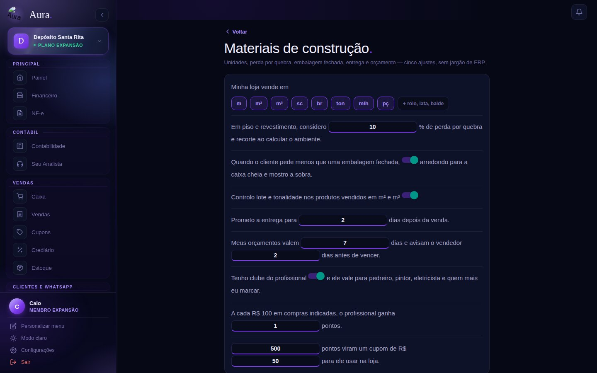
Tela Materiais de construção: cada linha é uma frase completa, como o dono explicaria para um funcionário novo.
Passo 3Cadastrar o que se vende por m², kg ou metro
Onde: Estoque → + Produto (ou toque em um produto para editar)
Em Unidade de venda, escolha na fileira Materiais: m², m³, kg, m, sc, br, ton…
Se você compra em outra unidade, preencha Compro por: "cx de 2,5 m²", "pallet de 60 sc", "rolo de 100 m". O Caixa e a Compras usam isso para converter.
Com unidade fracionada, o estoque aceita decimal: 187,5 m².
Em Códigos e fiscal, informe o CEST (7 dígitos) e responda: o imposto já veio recolhido na nota do fornecedor? Cimento, tinta, tubo e piso normalmente sim (substituição tributária).
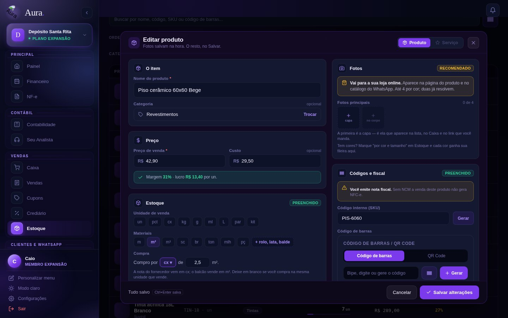
Piso em m², comprado em caixa de 2,5 m².
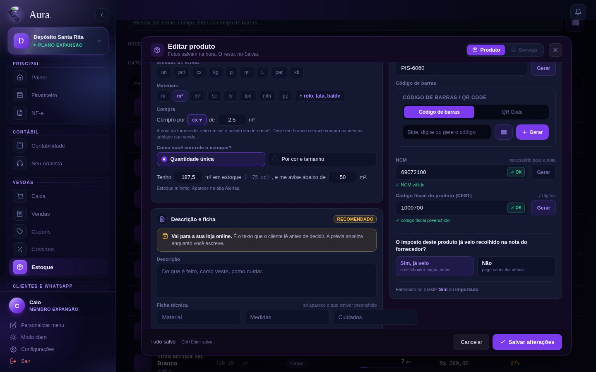
CEST validado e a pergunta do ST em português de balcão.
Por que isso importa. No Simples Nacional, produto com imposto já recolhido sai na nota com CSOSN 500; sem isso a nota sai com 102 e a SEFAZ pode recusar ou você paga imposto duas vezes. A Aura decide sozinha a partir dessa resposta.
Passo 4Vender no Caixa
Onde: Caixa — o mesmo de sempre
Toque no produto. Se ele é em m², kg ou m, o campo de quantidade aceita vírgula: 12,5 m².
Embaixo aparece a conta da embalagem: = 5 cx · 12,5 m², com a sobra quando não fecha caixa.
Não sabe a metragem? Toque em calcular ambiente: largura × comprimento por cômodo, perda de quebra já somada, e escolha "Usar 20,00 m²" ou "Usar 8 cx fechadas".
Com lote ligado, o Caixa mostra o lote e a tonalidade e avisa quando a venda vai precisar de dois lotes.
Cliente veio indicado por um pedreiro? Toque em + indicar profissional e busque pelo nome: os pontos aparecem na hora.
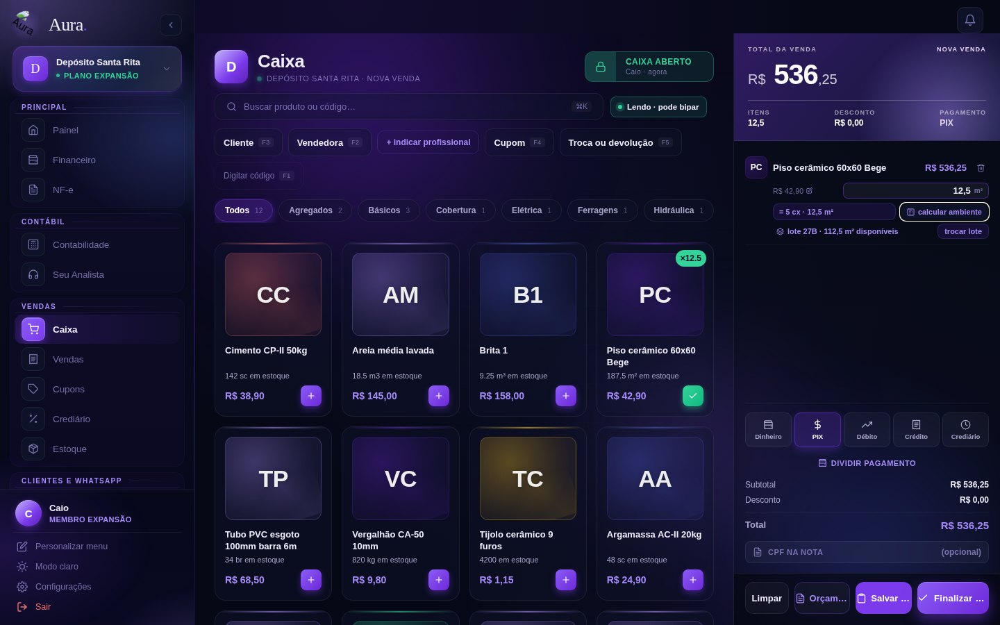
Quantidade decimal, frase da embalagem e lote, sem sair do Caixa.
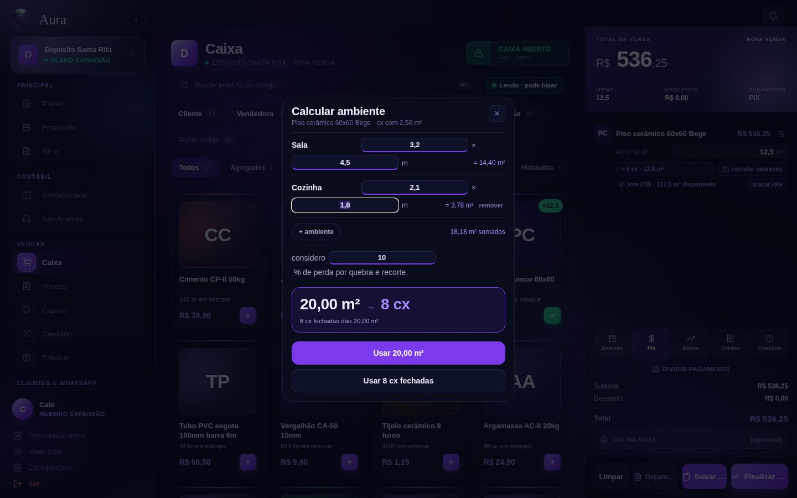
Sala 3,2 × 4,5 + cozinha 2,1 × 1,8 → 18,18 m² + 10% = 20 m² = 8 caixas.
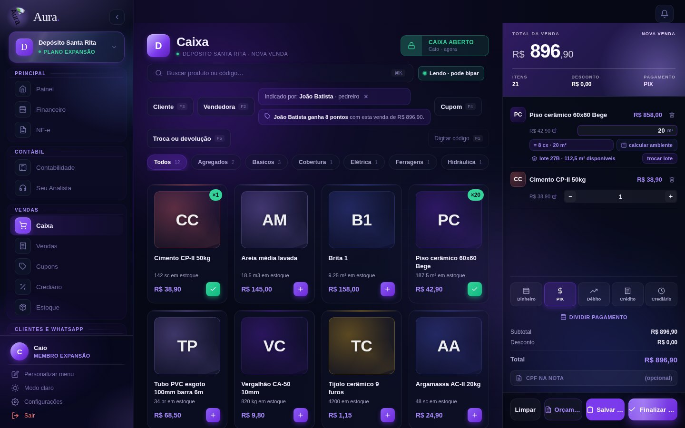
"João Batista ganha 54 pontos com esta venda" — o clube sem planilha.
Monte o carrinho normalmente e toque em Salvar orçamento. Ele ganha número, validade e um link.
Enviar no WhatsApp manda o link; o cliente vê os itens e toca em Aceitar orçamento pelo celular.
Na esteira, cada card mostra o valor e quando vence. Vencendo destaca o que precisa de ligação hoje.
Converter em pedido abre o Caixa com tudo preenchido: a venda nasce do jeito de sempre e a primeira entrega já aparece na esteira de Entregas.
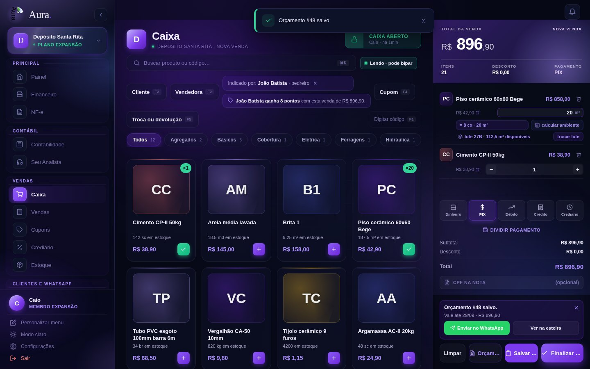
Orçamento salvo: enviar no WhatsApp ou ver na esteira.
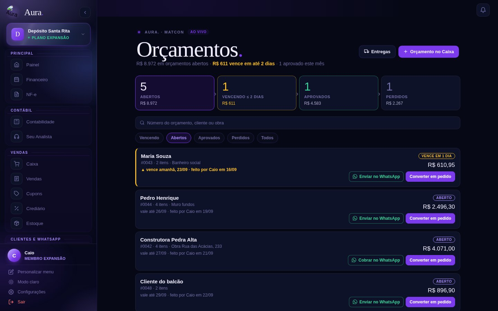
Abertos, vencendo, aprovados, perdidos — com o dinheiro parado em cada estação.
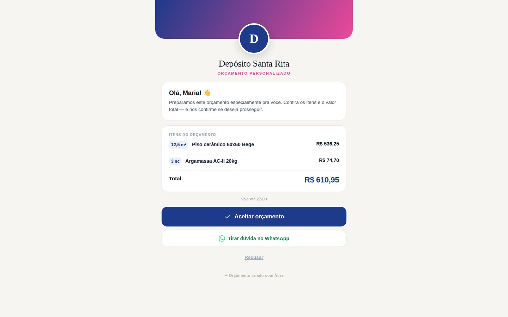
O que o cliente recebe no WhatsApp, com a marca da loja.
Passo 6Entregas e entrega parcial
Onde: Matcon → Entregas
Toda venda com entrega aparece em Separando. Os botões avançam: Marcar pronto → Saiu para entrega → Marcar como entregue.
Quem entregou é um campo livre: "Zé (caminhão 3/4)". Sem cadastro de motorista.
Não coube tudo no caminhão? Entrega parcial: digite o que foi e a Aura cria a próxima viagem com o saldo.
O cliente acompanha pelo link /acompanhar: etapa atual, o que já foi e quando vai o resto.
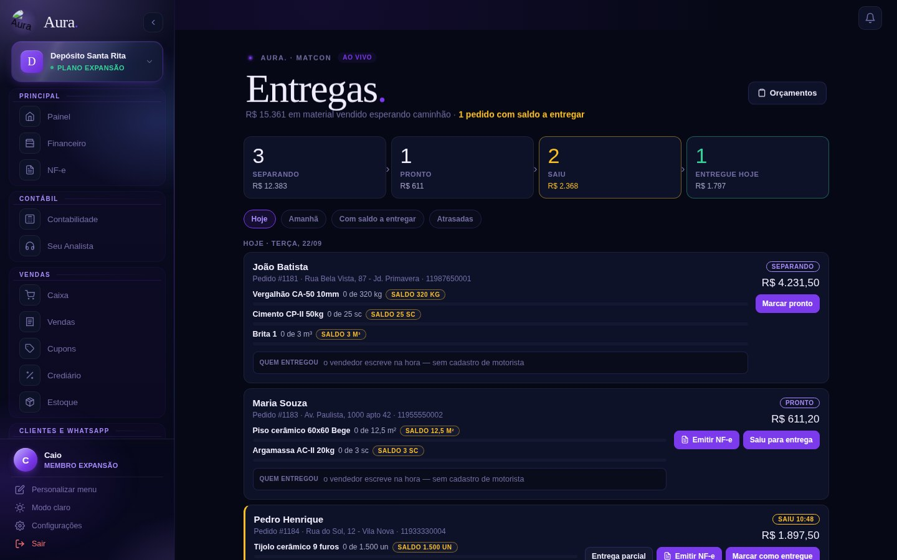
Separando, pronto, saiu, entregue hoje — e os pedidos com saldo a entregar.
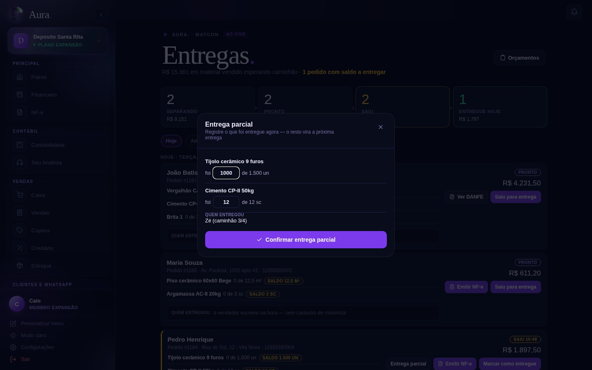
"Foi 1.000 de 1.500 tijolos": o resto vira a próxima entrega.
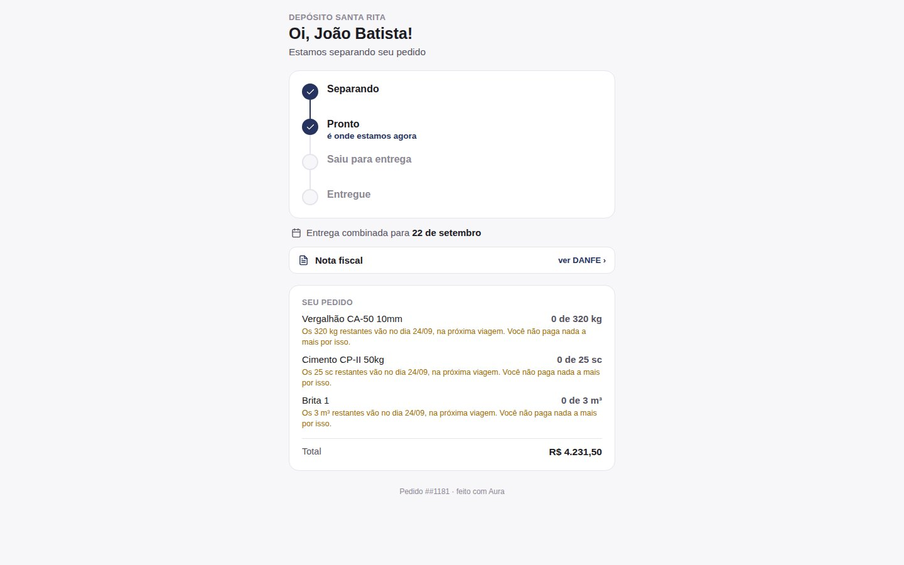
O cliente vê "os 500 restantes vão dia 24/09, na próxima viagem".
Passo 7NF-e da entrega (Simples Nacional)
Onde: card da entrega → Emitir NF-e · notas em NF-e
A nota nasce da entrega, não da venda: cada viagem leva a sua, com os itens e o preço da venda.
Se algum item está sem CEST, a folha avisa antes de emitir e leva você ao cadastro em um toque (Resolver).
Preencha para quem é, e como vai o material: meu caminhão (volumes, peso, placa) ou cliente retira / transportadora.
Emitiu: o card da entrega ganha o selo NF-e #1043 · autorizada e o botão Ver DANFE. O cliente também vê o DANFE na página de acompanhamento.
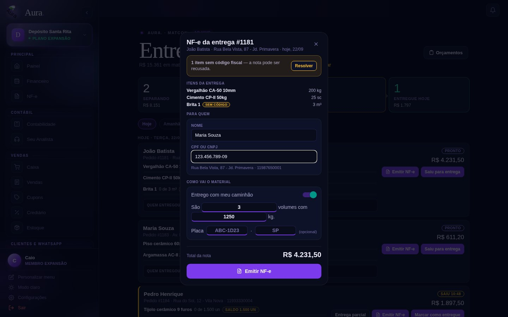
Aviso de item sem código fiscal, destinatário e transporte em uma folha só.
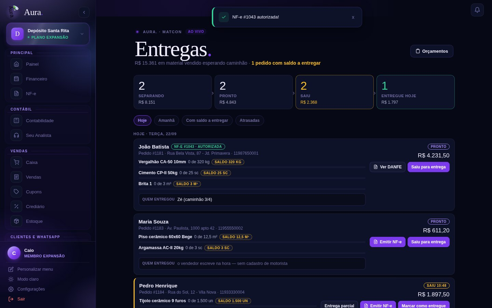
Selo da nota no card e "Ver DANFE" no lugar de "Emitir".
Atenção. O regime da empresa fica em NF-e → Configurações. O Matcon foi desenhado para o Simples (CSOSN); Lucro Presumido e Real usam a emissão de sempre.
Profissional é um cliente marcado, não um segundo cadastro: abra a ficha, toque em Marcar como profissional e escolha o ofício (pedreiro, eletricista, arquiteto…).
No Caixa, + indicar profissional credita pontos: 1 ponto a cada R$ 100 (ajustável).
Em Profissionais, quem tem pontos para resgatar aparece em destaque. Gerar cupom de resgate cria um cupom de R$ 50 e Avisar no WhatsApp manda o extrato.
O filtro Sem compra há 60 dias mostra quem sumiu; Chamar de volta abre o WhatsApp com a mensagem pronta.
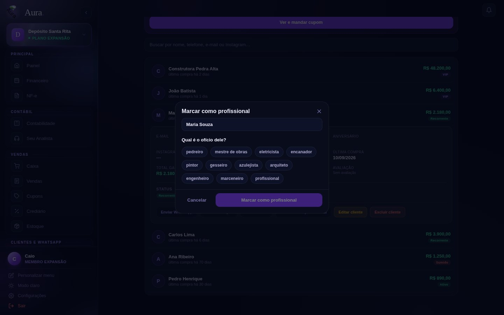
Tocou, escolheu o ofício, pronto.Cupom gerado e saldo de pontos debitado na hora.
Passo 9Compras e DANFE do fornecedor
Onde: Matcon → Compras · Estoque → Importar DANFE
A Aura olha o mínimo e o ritmo de venda e sugere a compra por fornecedor: "tem 21 sc, mínimo 30, vende 18/semana → sugerimos 80 sc".
Montar pedido cria o rascunho com as quantidades editáveis. Enviar no WhatsApp para o fornecedor manda a lista; Marcar como enviado é para quem prefere ligar.
Chegou o material? Importar DANFE lê o XML da nota, casa os produtos e, com lote ligado, pede lote e tonalidade de cada piso.
O pedido vai para Recebido e o estoque entra convertido: 30 caixas viram 75 m².
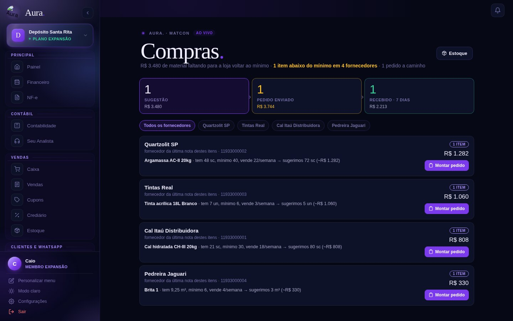
Sugestão, pedido enviado, recebido: a mesma esteira das outras telas.
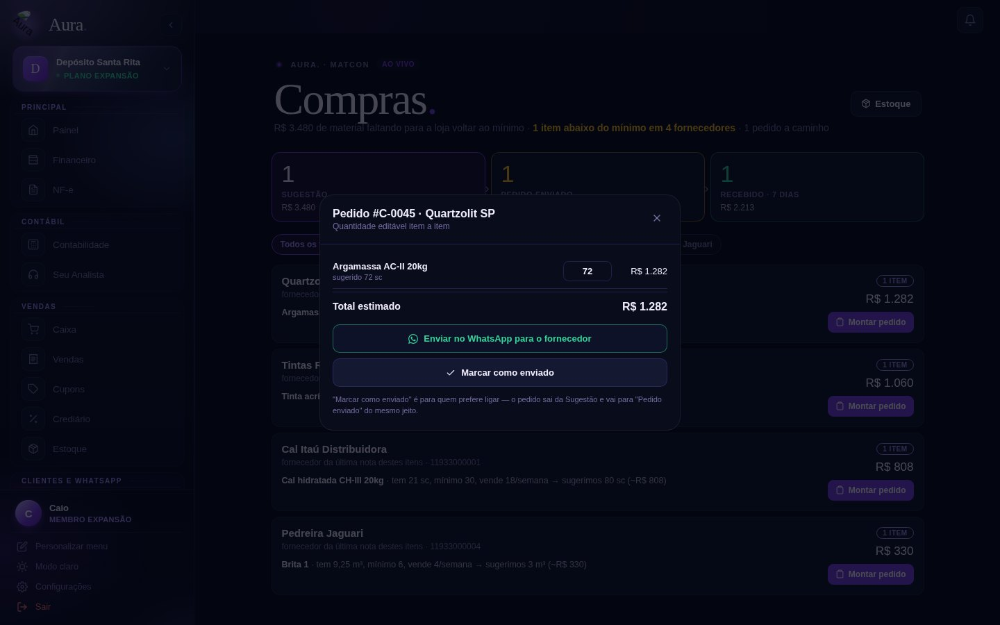
Rascunho com quantidade editável e envio pelo WhatsApp.
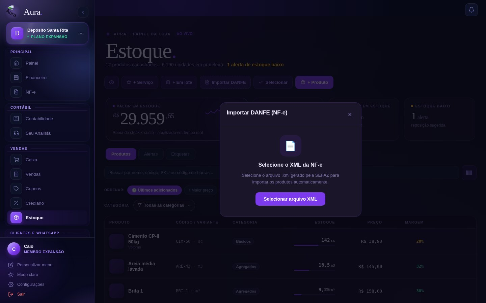
XML da NF-e do fornecedor vira entrada de estoque.
Passo 10No celular
Tudo acima funciona no celular do vendedor, com o mesmo desenho: título grande, botões abaixo do título e cards em coluna única.
Esteira de orçamentos.
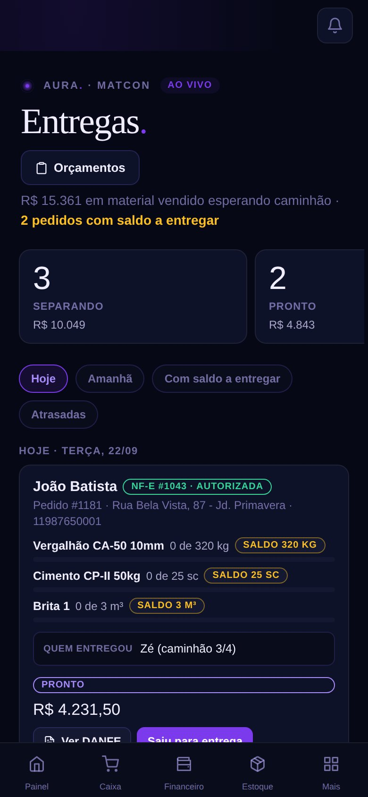
Entregas com quem entregou.Caixa com quantidade decimal.
ReferênciaOnde fica cada coisa
Quero…
Vou em…
Ligar ou desligar o Matcon
Configurações → Materiais de construção
Mudar unidades, perda, prazo de entrega, validade do orçamento, clube
Configurações → Unidades, entrega e clube
Vender por m², kg ou metro
Caixa (o produto precisa ter unidade fracionada no cadastro)